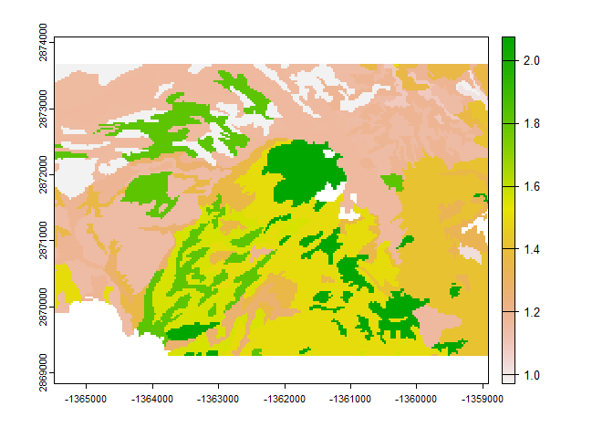
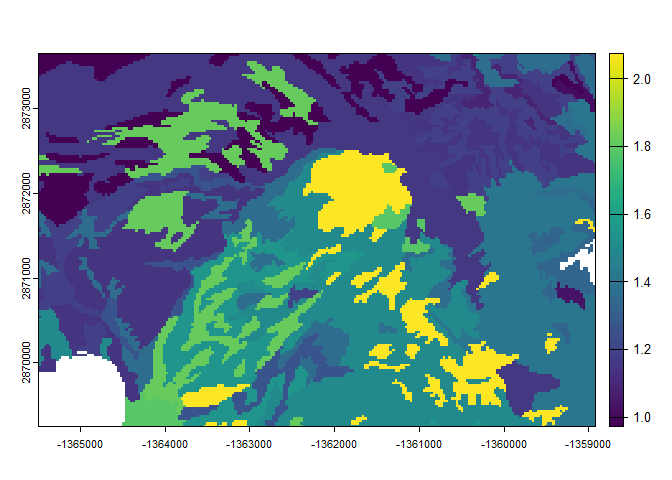

Rosetta is a neural network-based model for predicting unsaturated soil hydraulic parameters from basic soil characterization data. The model predicts parameters for the van Genuchten unsaturated soil hydraulic properties model, using sand, silt, and clay, bulk density and water content.
{rosettaPTF} uses {reticulate} to wrap the Python rosetta-soil module: providing several versions of the Rosetta pedotransfer functions in an R environment.
This package is primarily intended for more demanding use cases (such as calling Rosetta “continuously” on each cell in a stack of rasters), or for accessing the uncertainty and shape metrics from Zhang & Schaap (2017). High-throughput input to the pedotransfer function is possible by using RasterStack (raster) or SpatRaster (terra) objects as input.
Install {rosettaPTF}
First, install the package from GitHub:
if (!require("remotes")) install.packages("remotes")
remotes::install_github("ncss-tech/rosettaPTF")Then load the rosetta-soil module by loading the R package. If you do not have an available python installation or rosetta-soil module you will be notified.
library(rosettaPTF)
rosetta-soil Python module
The rosetta-soil module is a Python package maintained by Dr. Todd Skaggs (USDA-ARS) and other U.S. Department of Agriculture employees.
The Rosetta pedotransfer function predicts five parameters for the van Genuchten model of unsaturated soil hydraulic properties
-
theta_r: residual volumetric water content -
theta_s: saturated volumetric water content -
log10(alpha): retention shape parameter[log10(1/cm)] -
log10(n): retention shape parameter (also referred to asnpar) -
log10(ksat): saturated hydraulic conductivity[log10(cm/d)]
For each set of input data a mean and standard deviation of each parameter is given.
Less demanding use cases are encouraged to use the web interface or API endpoint. There are additional wrappers of the API endpoints provided by the soilDB R package ROSETTA() method. For small amounts of data consider using the interactive version that has copy/paste functionality: https://www.handbook60.org/rosetta.
Input Data
The Rosetta model relies on a minimum of 3 soil properties, with increasing (expected) accuracy as additional properties are included:
Required,
sand,silt,clay: USDA soil texture separates (percentages) that sum to 100%Optional,
bulk density (any moisture basis): mass per volume after accounting for >2mm fragments, units of grams/cm3Optional,
volumetric water content at 33 kPa: roughly “field capacity” for most soils, units of cm3/cm3Optional,
volumetric water content at 1500 kPa: roughly “permanent wilting point” for most plants, units of cm3/cm3
The default order of inputs is: sand, silt, clay, bulk density (any basis), water content (field capacity; 33 kPa), water content (permanent wilting point; 1500 kPa) of which the first three are required.
If you specify field capacity water content, you must specify bulk density. If you specify permanent wilting point water content you must also specify bulk density and field capacity water content.
{reticulate} Setup
If you are using this package for the first time you will need to have Python installed and you will need to download the necessary modules.
You can set up {reticulate} to install modules into a virtual or Conda environment. {reticulate} offers reticulate::install_python() and reticulate::install_miniconda() to download and set up Python/Conda if you have not yet done so.
Finding the python binaries
rosettaPTF::find_python()
#> [1] "C:/Program Files/Python310/python.exe"find_python() provides heuristics for setting up {reticulate} to use Python in commonly installed locations.
The first attempt makes use of Sys.which() to find installations available in the user path directory.
find_python() also provides an option for using ArcGIS Pro Conda environments–which may be needed for users who cannot install Conda by some other means. To use this option specify the arcpy_path argument or the rosettaPTF.arcpy_path option to locate both the ArcGIS Pro Conda environment and Python binaries in C:/Program Files/ArcGIS/Pro/bin/Python, for example:
rosettaPTF::find_python(arcpy_path = "C:/Program Files/ArcGIS/Pro/bin/Python")If automatic configuration via find_python() fails (returns NULL) you can manually set a path to the python executable with the {reticulate} RETICULATE_PYTHON environment variable: Sys.setenv(RETICULATE_PYTHON = "path/to/python") or reticulate::use_python("path/to/python")
Install rosetta-soil Python Module
The {rosettaPTF} install_rosetta() method wraps reticulate::py_install("rosetta-soil").
You can use install_rosetta() to install into custom environments by specifying envname as needed. After installing a new version of the module you should restart your R session.
rosettaPTF::install_rosetta()
#> Using virtual environment "~/.virtualenvs/r-reticulate" ...
#> Error in system2(python, c("-c", shQuote(command)), stdout = TRUE, stderr = TRUE) :
#> 'CreateProcess' failed to run 'C:\Users\ANDREW~1.BRO\DOCUME~1\VIRTUA~1\R-RETI~1\Scripts\python.exe -c "import sys; import pip; sys.stdout.write(pip.__version__)"'
#> [1] TRUEAlternately, to install the module manually with pip you can run the following command. This assumes a Python 3 binary called python can be found on your path.
run_rosetta()
Batch runs of Rosetta models can be done using using list, data.frame, matrix, RasterStack, RasterBrick and SpatRaster objects as input.
list() Input Example
run_rosetta(list(c(30, 30, 40, 1.5), c(55, 25, 20), c(55, 25, 20, 1.1)),
rosetta_version = 3)
#> id model_code theta_r_mean theta_s_mean log10_alpha_mean log10_npar_mean
#> 1 1 3 0.11535773 0.4179120 -2.067139 0.1120102
#> 2 2 2 0.08613275 0.3888528 -1.898150 0.1347136
#> 3 3 3 0.09130753 0.4850320 -2.022388 0.1510716
#> log10_Ksat_mean theta_r_sd theta_s_sd log10_alpha_sd log10_npar_sd
#> 1 0.8325407 0.013350113 0.009377977 0.08251142 0.01323413
#> 2 1.1858005 0.006014445 0.006273536 0.07481303 0.01160419
#> 3 1.9060148 0.012771407 0.013062171 0.10020312 0.01763982
#> log10_Ksat_sd
#> 1 0.09245277
#> 2 0.08428578
#> 3 0.14163567Output model_code reflects the number of parameters in the input.
data.frame() Input Example
The data.frame interface allows for using using custom column names and order. If the vars argument is not specified it is assumed that the columns are in the order specified in the run_rosetta() manual page.
run_rosetta(data.frame(
d = c(NA, 1.5),
b = 60,
a = 20,
c = 20
), vars = letters[1:4])
#> id model_code theta_r_mean theta_s_mean log10_alpha_mean log10_npar_mean
#> 1 1 2 0.08994502 0.4301366 -2.426236 0.1756873
#> 2 2 3 0.08495731 0.3887858 -2.318826 0.1598879
#> log10_Ksat_mean theta_r_sd theta_s_sd log10_alpha_sd log10_npar_sd
#> 1 1.1927311 0.006707593 0.008785824 0.07413139 0.01323068
#> 2 0.9961317 0.010184683 0.008100061 0.07976954 0.01753829
#> log10_Ksat_sd
#> 1 0.08709446
#> 2 0.07771481Soil Data Access / SSURGO Mapunit Aggregate Input Example
This example pulls mapunit/component data from Soil Data Access (SDA). We use the {soilDB} function get_SDA_property() to obtain representative values for sand, silt, clay, and bulk density (1/3 bar) we run Rosetta on the resulting data.frame (one row per mapunit) then use raster attribute table (RAT) to display the results (1:1 with mukey).
library(soilDB)
library(terra)
#> Warning: package 'terra' was built under R version 4.2.1
#> terra 1.5.50
library(rosettaPTF)
# obtain mukey map from SoilWeb Web Coverage Service (800m resolution SSURGO derived)
res <- mukey.wcs(aoi = list(aoi = c(-114.16, 47.65,-114.08, 47.68), crs = 'EPSG:4326'))
#> Loading required namespace: sf
# request input data from SDA
varnames <- c("sandtotal_r", "silttotal_r", "claytotal_r", "dbthirdbar_r")
resprop <- get_SDA_property(property = varnames,
method = "Dominant Component (numeric)",
mukeys = unique(values(res$mukey)))
# keep only those where we have a complete set of 4 parameters (sand, silt, clay, bulk density; model code #3)
soildata <- resprop[complete.cases(resprop), c("mukey", varnames)]
# run Rosetta on the mapunit-level aggregate data
system.time(resrose <- run_rosetta(soildata[,varnames]))
#> user system elapsed
#> 0.14 0.00 0.14
# transfer mukey to result
resrose$mukey <- soildata$mukey
# merge property (input) and rosetta parameters (output) into RAT
levels(res) <- merge(cats(res)[[1]], resprop, by = "mukey", all.x = TRUE)
levels(res) <- merge(cats(res)[[1]], resrose, by = "mukey", all.x = TRUE)
# convert categories based on mukey to numeric values
res2 <- catalyze(res)
# make a plot of the predicted Ksat
plot(res2, "log10_Ksat_mean")
SpatRaster (terra) Input Example
The above example shows how to create raster output based on discrete (SSURGO polygon derived) data. A more general case is when each raster cell has “unique” values (i.e. continuous raster inputs). run_rosetta() has an S3 method defined for SpatRaster input.
We previously merged the input data from SDA (an ordinary data.frame) into the RAT of res; exploiting the linkage between mukey and raster cells to make the map. For comparison with the mukey results above we stack de-ratified input layers and create a new SpatRaster.
res3 <- rast(list(
res2[["sandtotal_r"]],
res2[["silttotal_r"]],
res2[["claytotal_r"]],
res2[["dbthirdbar_r"]]
))
# SpatRaster to data.frame interface (one call on all cells)
system.time(test2 <- run_rosetta(res3))
#> user system elapsed
#> 28.25 9.05 33.31
# make a plot of the predicted Ksat (identical to mukey-based results)
plot(test2, "log10_Ksat_mean")
You will notice the results for Ksat distribution are identical since the same input values were used, but the latter approach took longer to run. The time difference is the difference of estimating ~40 (1 estimate per mapunit key) versus ~30,000 (1 estimate per raster cell) sets of Rosetta parameters.
Extended Output with Rosetta S3 Class
Make a Rosetta class instance for running extended output methods
Note that each instance of Rosetta has a fixed version and model code, so if you have heterogeneous input you need to iterate over model code.
# defaults are version 3 and model code 3 (4 parameters: sand, silt, clay and bulk density)
my_rosetta <- Rosetta(rosetta_version = 3, model_code = 3)
predict() Rosetta Parameter Values and Standard Deviations from a Rosetta instance
predict(my_rosetta, list(c(30, 30, 40, 1.5), c(55, 25, 20, 1.1)))
#> [[1]]
#> [,1] [,2] [,3] [,4] [,5]
#> [1,] 0.11535773 0.417912 -2.067139 0.1120102 0.8325407
#> [2,] 0.09130753 0.485032 -2.022388 0.1510716 1.9060148
#>
#> [[2]]
#> [,1] [,2] [,3] [,4] [,5]
#> [1,] 0.01335011 0.009377977 0.08251142 0.01323413 0.09245277
#> [2,] 0.01277141 0.013062171 0.10020312 0.01763982 0.14163567Extended Rosetta Predictions, Parameter Distributions and Summary Statistics after Zhang & Schaap (2017) with ann_predict()
ann_predict(my_rosetta, list(c(30, 30, 40, 1.5), c(55, 25, 20, 1.1)))
#> ann_predict() is defined for objects with class Rosetta; see `Rosetta()` to create a new instance
#> $var_names
#> $var_names[[1]]
#> b'theta_r'
#>
#> $var_names[[2]]
#> b'theta_s'
#>
#> $var_names[[3]]
#> b'alpha'
#>
#> $var_names[[4]]
#> b'npar'
#>
#> $var_names[[5]]
#> b'ks'
#>
#>
#> $sum_res_mean
#> [,1] [,2]
#> [1,] 0.1153577 0.09130753
#> [2,] 0.4179120 0.48503196
#> [3,] -2.0671385 -2.02238809
#> [4,] 0.1120102 0.15107161
#> [5,] 0.8325407 1.90601478
#>
#> $sum_res_std
#> [,1] [,2]
#> [1,] 0.013350113 0.01277141
#> [2,] 0.009377977 0.01306217
#> [3,] 0.082511421 0.10020312
#> [4,] 0.013234131 0.01763982
#> [5,] 0.092452769 0.14163567
#>
#> $sum_res_cov
#> , , 1
#>
#> [,1] [,2] [,3] [,4] [,5]
#> [1,] 1.782255e-04 3.719987e-05 5.300747e-05 2.278859e-05 5.965812e-05
#> [2,] 3.719987e-05 8.794645e-05 2.570007e-04 3.632187e-06 2.662337e-04
#> [3,] 5.300747e-05 2.570007e-04 6.808135e-03 -3.601399e-04 1.347519e-03
#> [4,] 2.278859e-05 3.632187e-06 -3.601399e-04 1.751422e-04 8.973559e-05
#> [5,] 5.965812e-05 2.662337e-04 1.347519e-03 8.973559e-05 8.547515e-03
#>
#> , , 2
#>
#> [,1] [,2] [,3] [,4] [,5]
#> [1,] 1.631088e-04 2.342660e-05 2.087559e-05 -9.477980e-06 -0.0003382175
#> [2,] 2.342660e-05 1.706203e-04 3.156961e-04 -4.577936e-05 0.0005664825
#> [3,] 2.087559e-05 3.156961e-04 1.004067e-02 -7.685234e-04 0.0012668368
#> [4,] -9.477980e-06 -4.577936e-05 -7.685234e-04 3.111634e-04 0.0001828960
#> [5,] -3.382175e-04 5.664825e-04 1.266837e-03 1.828960e-04 0.0200606627
#>
#>
#> $sum_res_skew
#> [,1] [,2]
#> [1,] -4.52570431 -2.33577302
#> [2,] -0.01729594 -0.22228088
#> [3,] -0.18215435 -0.25961263
#> [4,] -0.15345973 0.04145318
#> [5,] -0.20386127 -0.35765020
#>
#> $sum_res_kurt
#> [,1] [,2]
#> [1,] 36.6873026 16.85229297
#> [2,] 0.5975976 0.02966211
#> [3,] 0.3016512 0.11663125
#> [4,] 0.1342581 0.26557316
#> [5,] 0.3127817 0.54242091
#>
#> $sum_res_bool
#> [,1] [,2]
#> [1,] TRUE TRUE
#> [2,] TRUE TRUE
#> [3,] TRUE TRUE
#> [4,] TRUE TRUE
#> [5,] TRUE TRUE
#>
#> $nsamp
#> [1] 2
#>
#> $nout
#> [1] 5
#>
#> $nin
#> [1] 4Selected References
Three versions of the ROSETTA model are available, selected using rosetta_version argument.
rosetta_version1 - Schaap, M.G., F.J. Leij, and M.Th. van Genuchten. 2001. ROSETTA: a computer program for estimating soil hydraulic parameters with hierarchical pedotransfer functions. Journal of Hydrology 251(3-4): 163-176. doi: 10.1016/S0022-1694(01)00466-8.rosetta_version2 - Schaap, M.G., A. Nemes, and M.T. van Genuchten. 2004. Comparison of Models for Indirect Estimation of Water Retention and Available Water in Surface Soils. Vadose Zone Journal 3(4): 1455-1463. doi: 10.2136/vzj2004.1455.rosetta_version3 - Zhang, Y., and M.G. Schaap. 2017. Weighted recalibration of the Rosetta pedotransfer model with improved estimates of hydraulic parameter distributions and summary statistics (Rosetta3). Journal of Hydrology 547: 39-53. doi: 10.1016/j.jhydrol.2017.01.004.